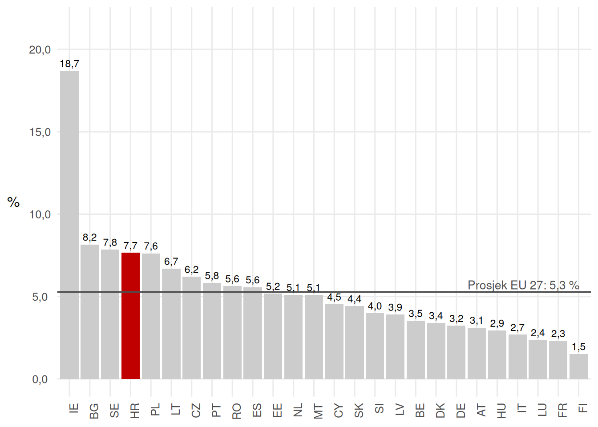
Gospodarski rast
1 Najnovija kretanja BDP-a u EU 27
1.1 Nominalni BDP yoy
1.2 Realni BDP yoy
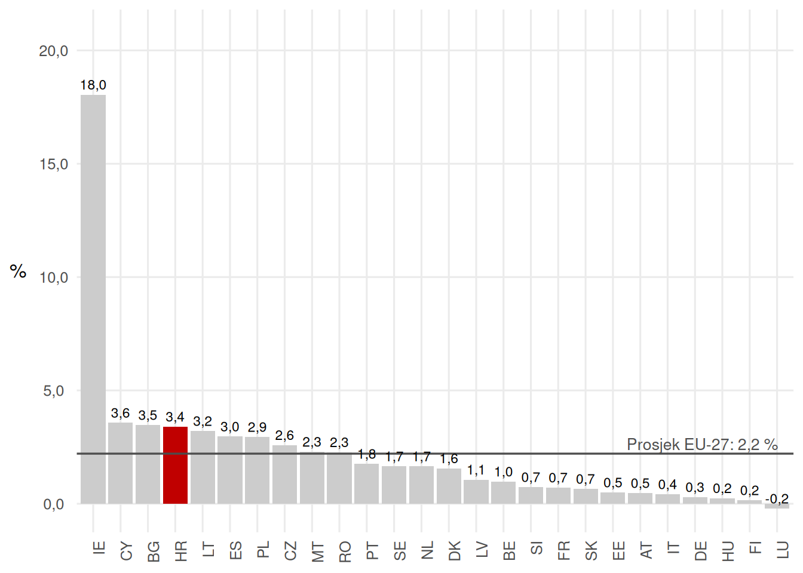
1.3 Realni BDP qoq
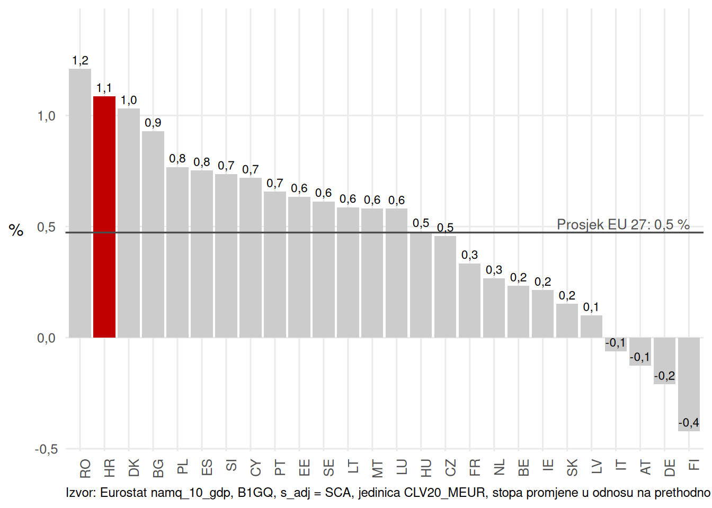
1.4 Nominalni BDP
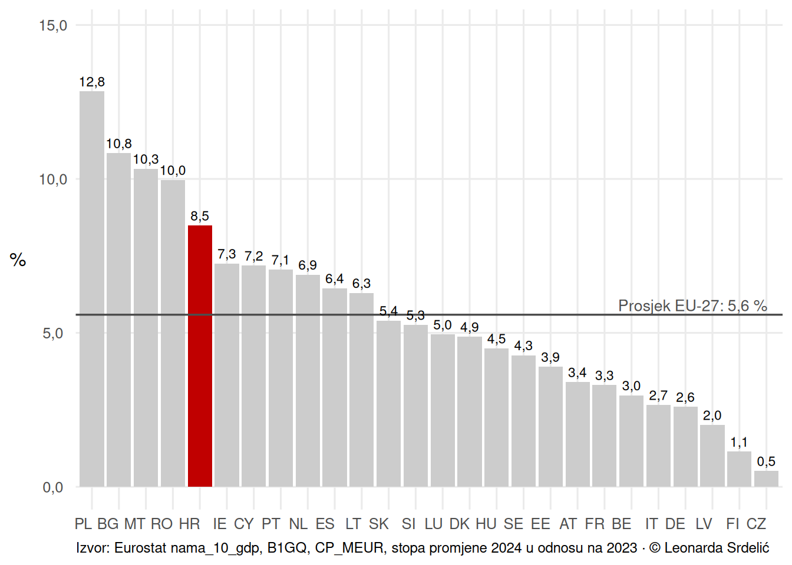
1.5 Realni BDP
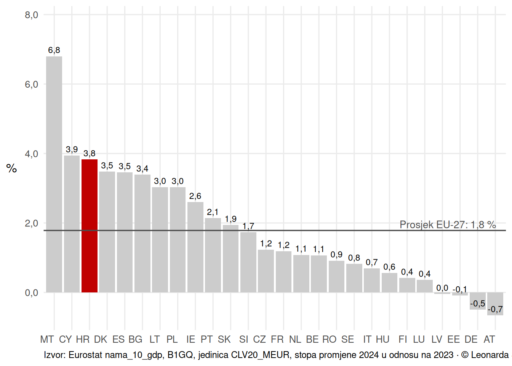
1.6 BDP po stanovniku u PPS (CEE, EU 27 = 100)
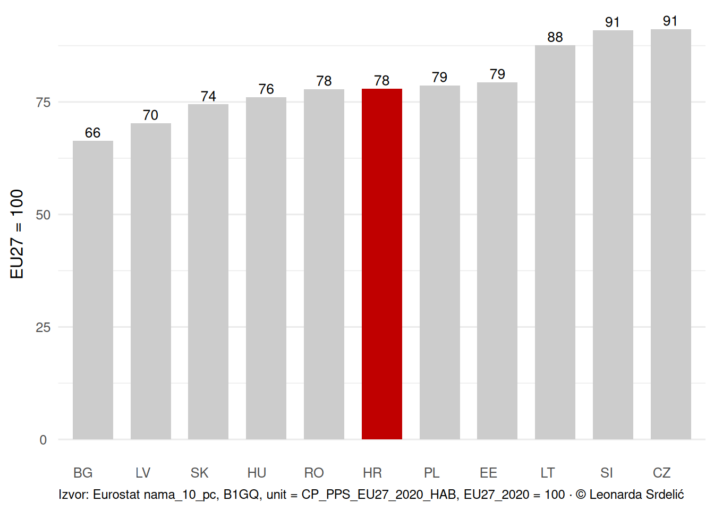
2 Dugoročni trendovi trend realnog BDP-a
2.1 Kretanje realnog BDP-a: Hrvatska i referentne europske skupine
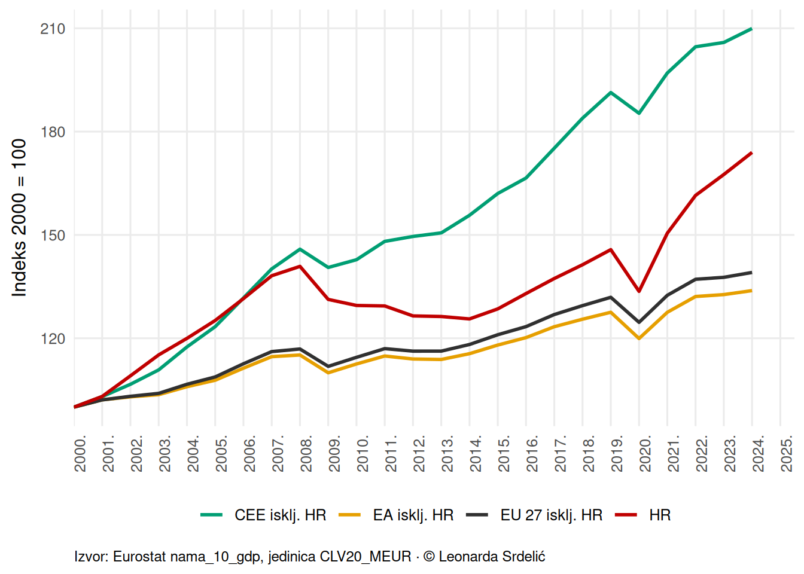
3 Dinamika rasta realnog BDP-a
3.1 Godišnje stope rasta realnog BDP-a
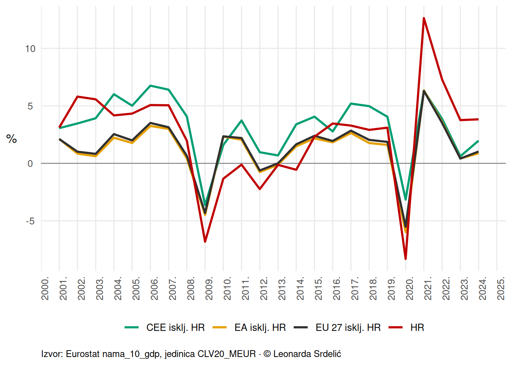
3.2 Tromjesečne stope rasta realnog BDP-a
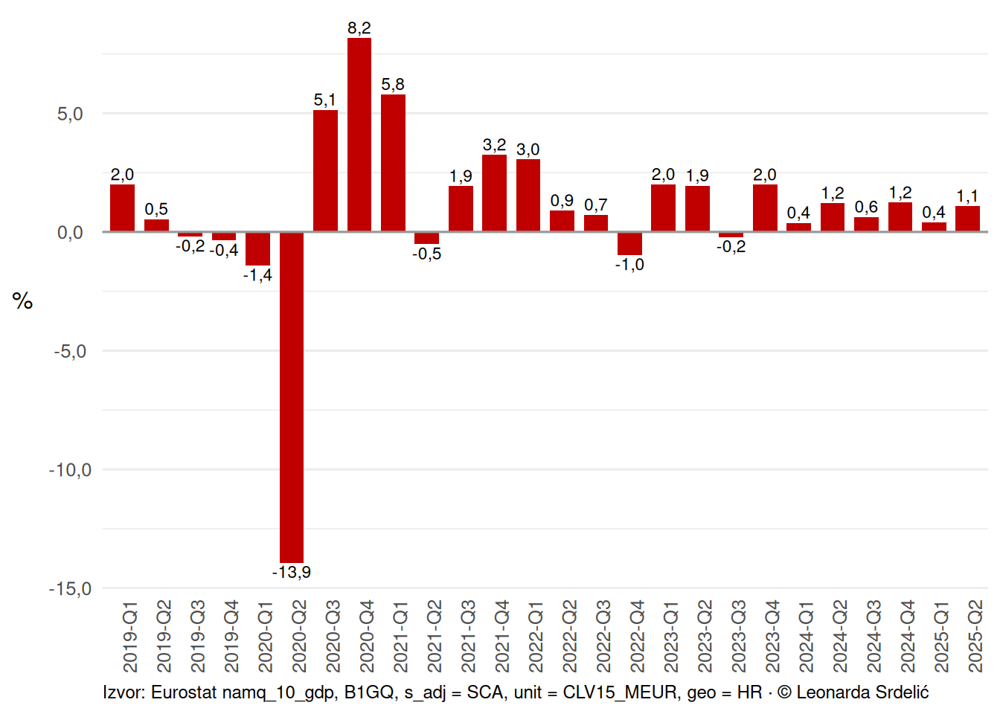
4 Distribucija realnog BDP-a unutar skupina
4.1 CEE bez Hrvatske

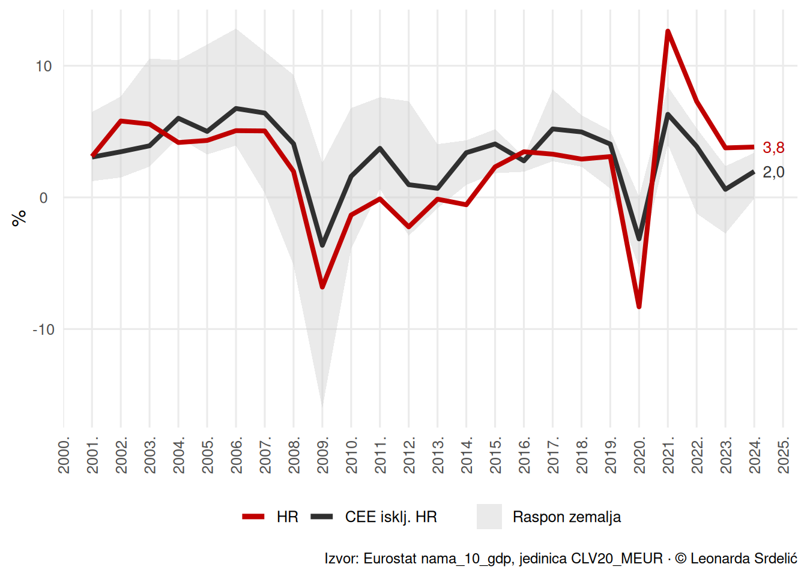
4.2 EU 27 bez Hrvatske
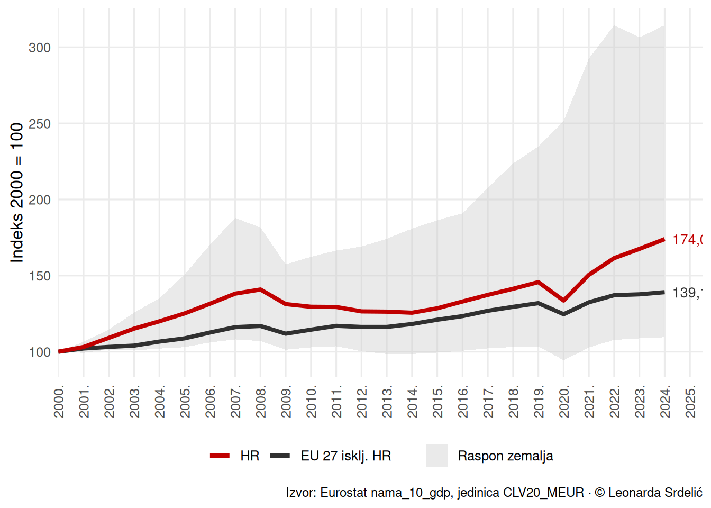

4.3 Područje eura bez Hrvatske


5 Napomene
- Izvori podataka: Eurostat, AMECO, Copernicus, DZS
- Metodološke napomene: svi grafovi izrađeni su na temelju javno dostupnih serija
- Ažuriranje: podaci se automatski osvježavaju prilikom ponovnog renderiranja Quarto dokumenta
© Leonarda Srdelić, 2025